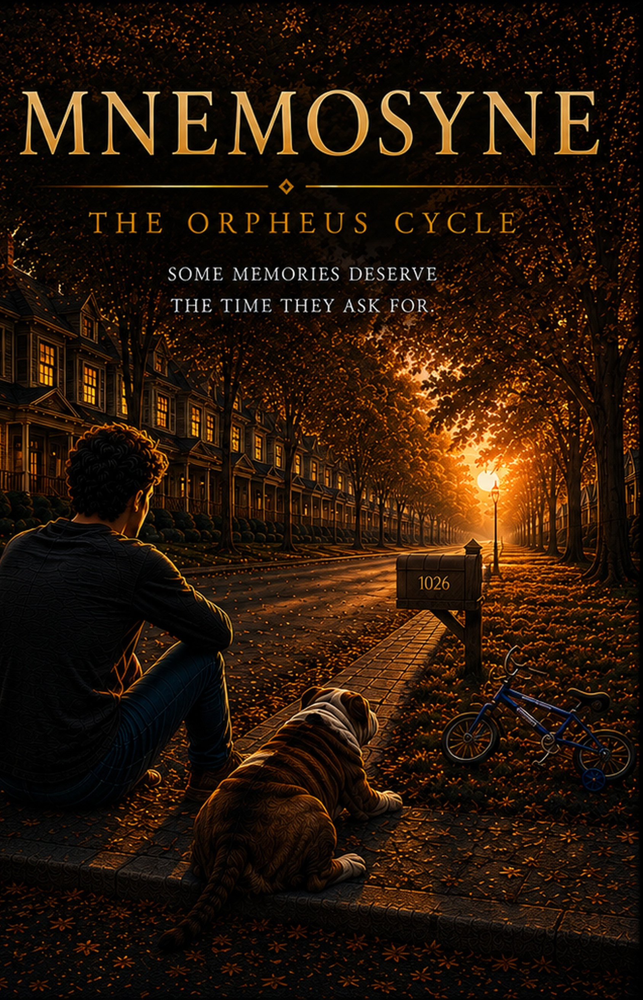

Mnemosyne
A novel about grief, memory, and the things we refuse to let go
Henry Wallace lost the two people he loved most. First Emily. Then Clara.
While working at the Atlas Complex, Henry discovers a place that shouldn't exist: a hidden library beneath the complex, preserved by time and wrapped in a silence that defies any explanation. The encounter that happens there transforms everything he thought he knew about memory, loss, and reality itself.
Mnemosyne: The Orpheus Cycle is a novel about love, grief, and the power of memories — those that stay with us, change us, and sometimes refuse to disappear.
The questions at the heart of the story
Memory & Loss
What do we preserve when someone we love disappears? And at what cost?
Grief & Identity
How do we remain ourselves after losing the people who defined us?
Love & Limits
When does holding on become the most profound act of love — and when does it become its greatest betrayal?
Consciousness
What makes someone truly present — in memory, in technology, in another person's mind?
Time
Some losses unfold slowly. Some memories stay sharp for decades. Time is not a healer — it is a witness.
Humanity
A novel written in the age of AI about what cannot be replicated: the irreducible weight of a human life.
"Some memories deserve the time they ask for."— Mnemosyne: The Orpheus Cycle
Find your edition
About the book
Is this a science fiction novel?
No — not in the genre sense. Mnemosyne uses speculative elements (a technology for preserving consciousness) as the frame for an intensely literary story about grief, love, and the limits of human connection. The novel is closer to contemporary literary fiction than to science fiction.
Can I read it in English if I'm not familiar with the Orpheus myth?
Yes. The myth is structural — the parallels are embedded in the story, not explained. No prior knowledge is required. The novel works as a standalone reading experience.
Is this the first book in a series?
Yes. Mnemosyne is Book 1 of The Orpheus Cycle. It is a complete, self-contained novel with its own beginning and resolution.
What formats are available?
Kindle ($9.99) and Paperback ($19.99) are available now on Amazon.com. The Hardcover edition ($29.99) is currently under KDP review and will be available shortly.
Is the novel available in other languages?
Yes. Mnemosyne was written and published simultaneously in Portuguese (MNEMOSINE: O Ciclo de Orpheus), English (Mnemosyne: The Orpheus Cycle), and Spanish (MNEMOSYNE: El ciclo de Orpheus). Each edition is a complete, independent version of the novel.